| Тема 1. Классы и объекты в Python. | ||
| Назад | ||
|
Понятия класса и объекта являются ключевыми в объектно-ориентированных языках программирования, к которым относится также и язык Python. В нем всё является объектами – и строки, и списки, и словари, и функции, и даже сами классы. Класс (от англ. class) – это шаблон кода, который используется для описания структуры и создания объектов, т.е. экземпляров этого класса. По сути классы в Python представляют собой типы данных, а объекты – отдельные экземпляры этих типов. Например, в инструкциях a = 'abcdef' и b = 'ABCDEF' переменным a и b присваиваются объекты строкового типа данных, т.е. экземпляры встроенного класса string. Если говорить совсем уж просто, то класс можно сравнить с чертежом, по которому создаются объекты. Достаточно создать всего лишь один класс и далее можно будет порождать любое количество его экземпляров, изменяя и дополняя их по мере необходимости. Благодаря использованию классов Python обладает всеми преимуществами абстрактного подхода в программировании. В частности Питону присущи:
Благодаря всем этим преимуществам ООП у программистов появляется возможность параллельной разработки отдельных независимых модулей в виде классов, способных скрывать от внешнего мира детали своего внутреннего устройства и объединяющихся в масштабные комплексные приложения посредством предназначенных для этого интерфейсов. Данный процесс можно наглядно представить на примере из жизни, когда отдельные модули МКС собираются независимо друг от друга разными странами, а затем на орбите собираются в одну монолитную космическую станцию за счет имеющихся интерфейсов, обеспечивающих взаимодействие готовых модулей между собой.
Python имеет множество встроенных типов, например, int, str и так далее, которые мы можем использовать в программе. Но также Python позволяет определять собственные типы с помощью классов. Класс представляет некоторую сущность. Конкретным воплощением класса является объект. Можно еще провести следующую аналогию. У нас у всех есть некоторое представление о человеке, у которого есть имя, возраст, какие-то другие характеристики Человек может выполнять некоторые действия - ходить, бегать, думать и т.д. То есть это представление, которое включает набор характеристик и действий, можно назвать классом. Конкретное воплощение этого шаблона может отличаться, например, одни люди имеют одно имя, другие - другое имя. И реально существующий человек будет представлять объект этого класса. Класс определяется с помощью ключевого слова class:
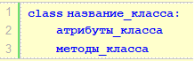 Внутри класса определяются его атрибуты, которые хранят различные характеристики класса, и методы - функции класса. Создадим простейший класс:
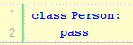 В данном случае определен класс Person, который условно представляет человека. В данном случае в классе не определяется никаких методов или атрибутов. Однако поскольку в нем должно быть что-то определено, то в качестве заменителя функционала класса применяется оператор pass. Этот оператор применяется, когда синтаксически необходимо определить некоторый код, однако мы не хотим его, и вместо конкретного кода вставляем оператор pass. После создания класса можно определить объекты этого класса. Например:
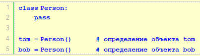
После определения класса Person создаются два объекта класса
Person - tom и bob. Для создания объекта применяется специальная
функция - конструктор,
которая называется по имени класса и которая возвращает объект
класса. То есть в данном случае вызов
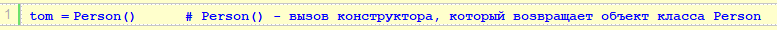 Методы классовМетоды класса фактически представляют функции, которые определенны внутри класса и которые определяют его поведение. Например, определим класс Person с одним методом:
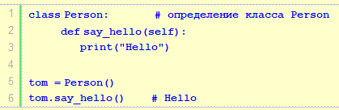
Здесь определен метод Используя имя объекта, мы можем обратиться к его методам. Для обращения к методам применяется нотация точки - после имени объекта ставится точка и после нее идет вызов метода:
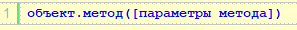
Например, обращение к методу
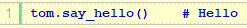 В итоге данная программа выведет на консоль строку "Hello".
Если метод должен принимать другие параметры, то они
определяются после параметра
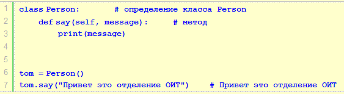
Здесь определен метод selfЧерез ключевое слово self можно обращаться внутри класса к функциональности текущего объекта:
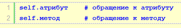 Например, определим два метода в классе Person:
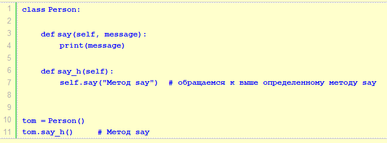
Здесь в одном методе -
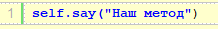
Поскольку метод Причем при вызове метода объекта нам обязательно необходимо использовать слово self, если мы его не используем:
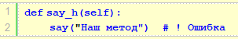 То мы столкнемся с ошибкой Конструкторы Функция __init__()Для создания объекта класса используется конструктор. Так, выше когда мы создавали объекты класса Person, мы использовали конструктор по умолчанию, который не принимает параметров и который неявно имеют все классы:
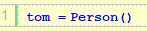 Однако мы можем явным образом определить в классах конструктор с помощью специального метода, который называется __init__() (по два прочерка с каждой стороны). К примеру, изменим класс Person, добавив в него конструктор:
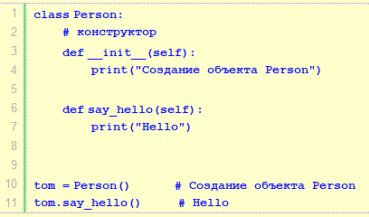
Итак, здесь в коде класса Person определен конструктор и метод Теперь при создании объекта:
будет производится вызов конструктора Функция __str__() Функция контролирует, что должно быть возвращено, когда объект класса представлен в виде строки.__str__() Если функция не задана, строковое представление объекта возвращается:__str__() class Person:
def __init__(self, name, age):
self.name = name
self.age = age
def __str__(self):
return f"{self.name}({self.age})"
p1 = Person("John", 36)
print(p1)>
Атрибуты объектаАтрибуты хранят состояние объекта. Для определения и установки атрибутов внутри класса можно применять слово self. Например, определим следующий класс Person:
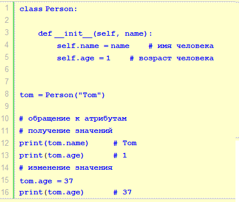 Теперь конструктор класса Person принимает еще один параметр - name. Через этот параметр в конструктор будет передаваться имя создаваемого человека. Внутри конструктора устанавливаются два атрибута - name и age (условно имя и возраст человека):
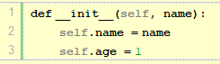 Атрибуту self.name присваивается значение переменной name. Атрибут age получает значение 1. Если мы определили в классе конструктор __init__, мы уже не сможем вызвать конструктор по умолчанию. Теперь нам надо вызывать наш явным образом опреледеленный конструктор __init__, в который необходимо передать значение для параметра name:
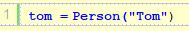 Далее по имени объекта мы можем обращаться к атрибутам объекта - получать и изменять их значения:
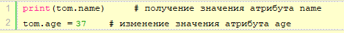 В принципе нам необязательно определять атрибуты внутри класса - Python позволяет сделать это динамически вне кода:
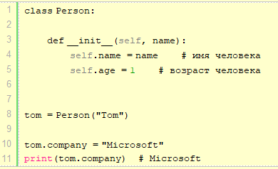 Здесь динамически устанавливается атрибут company, который хранит место работы человека. И после установки мы также можем получить его значение. В то же время подобное определение чревато ошибками. Например, если мы попытаемся обратиться к атрибуту до его определения, то программа сгенерирует ошибку:
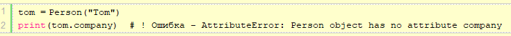 Для обращения к атрибутам объекта внутри класса в его методах также применяется слово self:
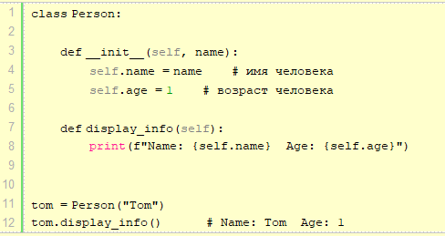
Здесь определяется метод display_info(), который выводит
информацию на консоль. И для обращения в методе к атрибутам
объекта применяется слово self: Создание объектовВыше создавался один объект. Но подобным образом можно создавать и другие объекты класса:
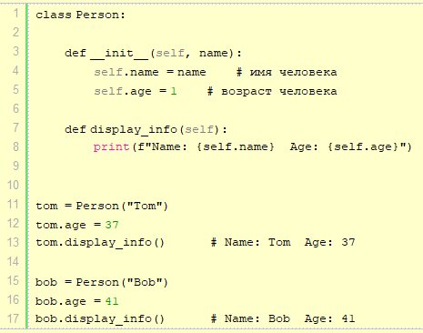 Здесь создаются два объекта класса Person: tom и bob. Они соответствуют определению класса Person, имеют одинаковый набор атрибутов и методов, однако их состояние будет отличаться. При выполнении программы Python динамически будет определять self - он представляет объект, у которого вызывается метод. Например, в строке:
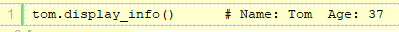 Это будет объект tom А при вызове
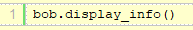 Это будет объект bob В итоге мы получим следующий консольный вывод:
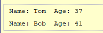
|
||
| Конспект подготовлен Бакулиным А. М. 2012 год. | ||